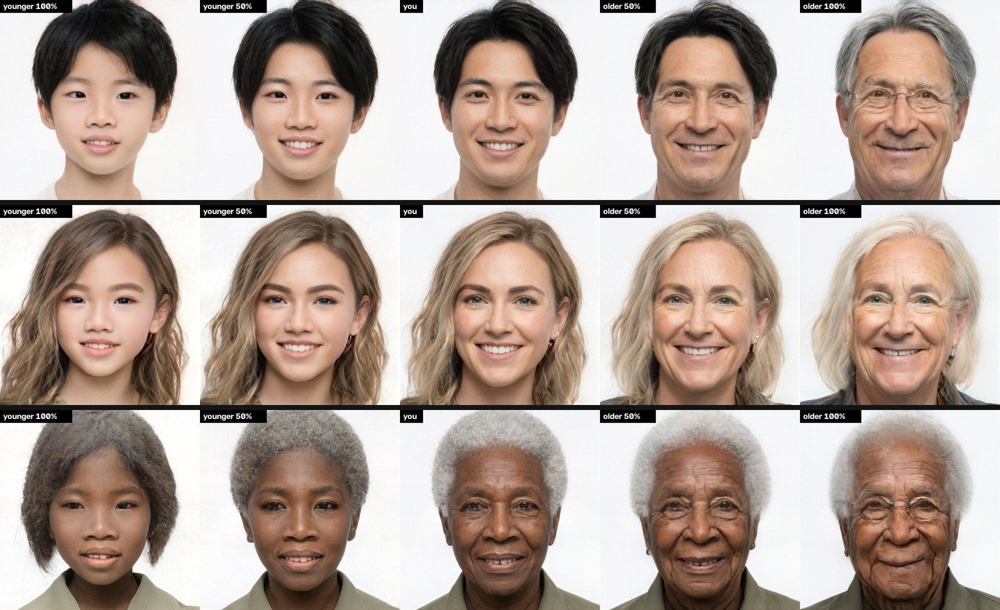

What it looks like
Three timelines at Balanced quality: much younger, younger, as they are, older, much older. Every face is an AI-generated person who doesn't exist. Click to enlarge.

Use it
- Python 3.9 - 3.12; an NVIDIA GPU (4 GB is enough).
- Start
run.bat(orrun.ps1,run.sh). The first run sets itself up; next to Changeling Tiresias it borrows its models instead of downloading them again. - Open photo, slide Age, press Age, then Save.
The window
| Age | younger ← as you are → older |
| Timeline | five ages at once |
| Keep gender | Auto, Woman, Man, Off |
| Result | the face frame (default), the whole photo, or the photo with its own hair |
| Quality | Fast (seconds), Balanced and Best (learn your face first) |
Without the window
run.bat photo.jpg --age 0.6 · run.bat photo.jpg --timeline